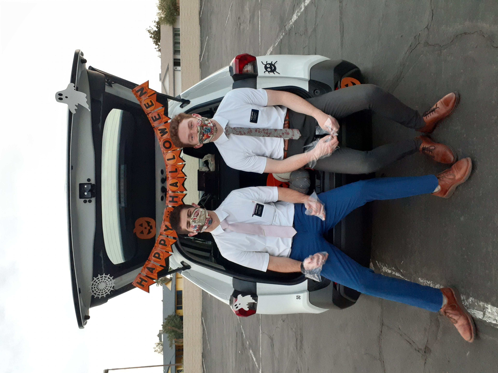
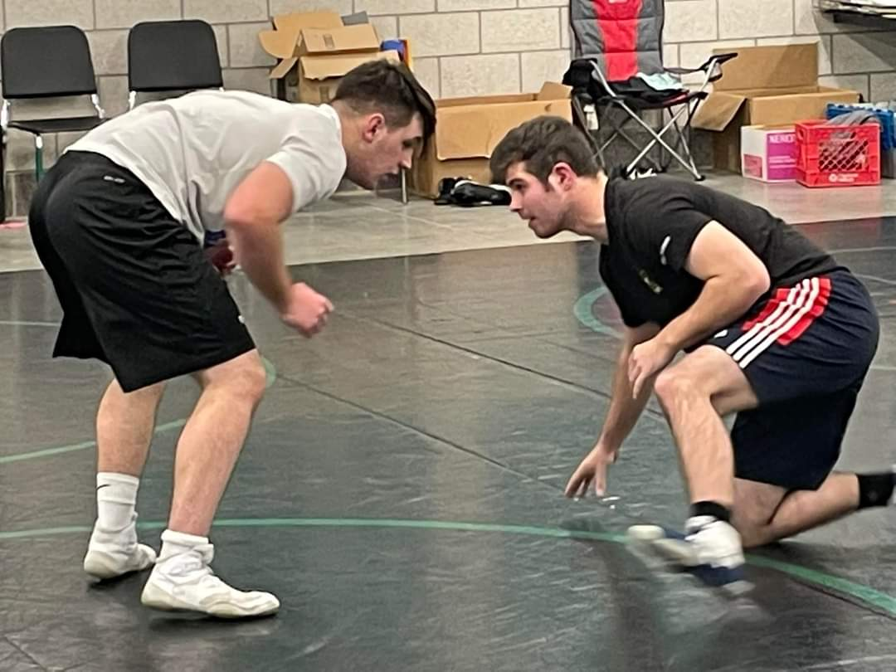

Having grown up in Georgia, I have a passion for the food and natural beauty of the South. College football is a religious experience, and I have cheered for the Cougs since I could talk. I am a wrestler, and like to keep fit by spending time on the mat. I strive to be a life-long learner and hope that this is reflected in my skills and experiences.
Education
- Elementary School:
- Panter Elementary
- Lillian C. Poole Elementary
- Shallowford Falls Elementary
- Middle School:
- Hightower Trail Middle
- High School:
- Alan C. Pope High
- College:
- Utah Valley University
- Brigham Young university

Experience
- Pizzeria Lucca: Roswell, Georgia (2017-2018)
- Table Busser
- Pizza Topper
- Head of Food Expo
- Georgia Borders: Canton, Georgia (2020)
- Physical Laborer
- Basic Landscaping
- Basic Concrete Skills (mixing, curbing)
- Missionary for the Church of Jesus Christ of Latter-day Saints

- Tahiti, Papeete Mission (Oct 2019-April 2020)
- Arizona, Phoenix Mission (May 2020-July 2021)
- BYU Moving Services: Provo, Utah
- Moving Crew
- Steelcase Assembly
Skills
- Wrestling
- French
- Southern cookin'
- Woodworking
- lying
- making lists 
- listing
- redundancy
- spellingg
- Database design and development
- Entity-Relationship Diagramming
- SQL
- Tableau
- VBA in Excel
- HTML/CSS/Bootstrap
- Trolling